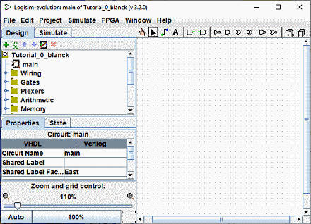

קודם: מערך לימוד למתחילים
שלב 0: התמצאות
כאשר אתה מפעיל את Logisim, תראה חלון דומה לחלון הבא. חלק מהפרטים עשויים להיות מעט שונה מכיוון שאתה כנראה משתמש במערכת שונה משלי.

כל הלוגיסים מחולקים לשלושה חלקים, הנקראים חלונית החוקרים, הטבלת המאפיינים, וקנבס. מעל חלקים אלה נמצאים שורת התפריטים וסרגל הכלים

נוכל להיפטר במהירות מחלונית הסייר וטבלת התכונות: לא נבחן אותם במסמך זה מדריך, ואתה יכול פשוט להתעלם מהם. כמו כן, שורת התפריטים מסבירה את עצמה.
זה משאיר את סרגל הכלים ואת קנבס. הבד הוא המקום שבו תצייר את המעגל שלך; וסרגל הכלים מכיל את הכלים שבהם תשתמש כדי להשיג זאת.
הבא: שלב 1: הוספת שערים